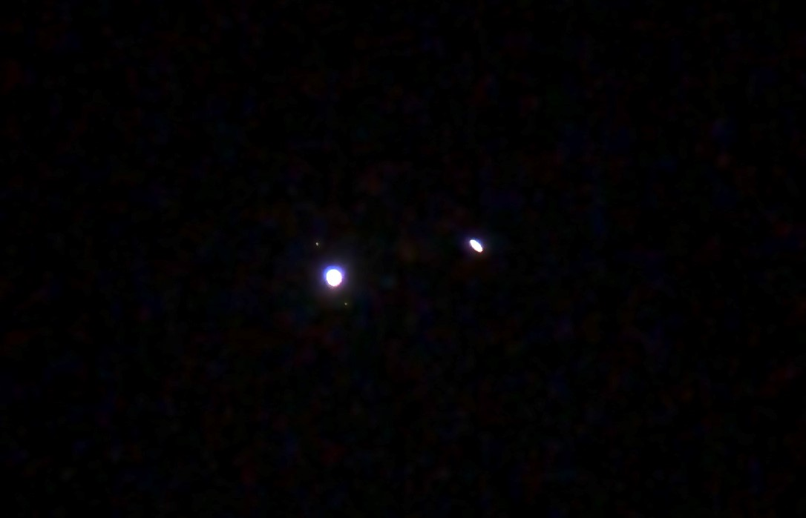

-
I fell in love with astronomy as a kid, but how could someone not? My dad would haul our small refractor telescope out to the edge of the driveway to get views of the moon. The brand of this one is Saturn, which is/was made by Meade. It has 70mm of aperture, giving it over 3,800 square mm of light gathering capabilities. I have used this scope to get fantastic views of the moon. Here's what this one looks like:

-
Another telescope I have enjoyed over the years is this Galileo that my mom gave to me as a gift. It's aperture is 80mm, a slight upgrade from the other one. This one has produced my best view of Saturn, Jupiter, and the Moon yet! In this photo, this telescope is on the left. On the right is my newest telescope that I still have much to explore with.

-
Here are some other photos I have captured through the 80mm telescope with an iPhone 8. The first image is of the conjunction of Saturn and Jupiter in 2020 - an incredibly rare event.


- In December 2020, I read Relativity, written by Albert Einstein on his General and Special Theory of Relativity. The book was fascinating to read because it gives the reader a whole new perspective on the universe. One of my favorite astronomers, Phil Plait, once said, "Astronomy will put you in your place," and it could not be more true.